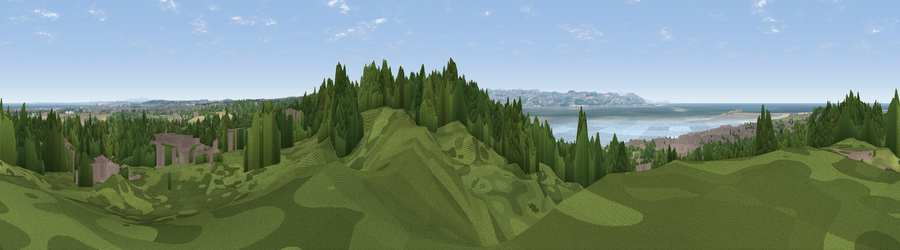

Viewpoint near Caldy
#33989 in England · top 48% of its area beats it · near Caldy · access?Where it is
The exact computed spot (SJ 22475 86175). Click the marker for map links.
Public access: no public right of way or access land is recorded at this exact spot — it may be on private land. Computed from Natural England's CRoW access layer and OpenStreetMap rights of way — not the legal definitive map. Always verify locally.
The view, rendered

A 360° render of this exact spot computed from the terrain model, tree cover and land cover — summer colours, afternoon light, calibrated against photographs of famous viewpoints. Real trees, hedges and buildings will differ in detail.
The panorama
Grey silhouette: terrain skyline in each direction (720 bearings, Earth curvature and refraction included). Dashed green: skyline with trees (+15 m) and buildings (+8 m) as obstacles. Blue strip: how far the ground is visible on each bearing.
Where the view opens
Wedge length = distance to the farthest visible ground on that bearing (vegetation-aware). Rings at 10, 25 and 50 km.
What fills the view
52% woodland · 17% water · 14% built-up · 14% grassland · 2% cropland
Angular shares of the visible panorama (visual magnitude), not map area. Landscape diversity 0.56 (0–1 Shannon).
Key numbers
More beautiful places nearby
The staircase of upgrades: each row has a higher view potential than everything closer. Driving times are estimates from straight-line distance, calibrated against real road routing — check an actual route before setting out.
| Place | Direction | Drive | Score |
|---|---|---|---|
| Viewpoint near Caldy | S · 1 km | ~2 min | 68.0 |
| Helsby Hill | ESE · 29 km | ~45 min | 74.6 |
| Viewpoint near Harthill | SE · 42 km | ~62 min | 80.5 |
| Rivington Pike | NE · 50 km | ~71 min | 81.9 |
| White Brow | ENE · 51 km | ~72 min | 82.9 |
| Viewpoint near Halfway House | S · 73 km | ~97 min | 83.3 |
| Viewpoint near Little Wenlock | SSE · 88 km | ~112 min | 84.2 |
| The Wrekin | SSE · 88 km | ~112 min | 85.0 |
53.36673, -3.16653 · source: screening · position refined by local search. Computed location — check access rights before visiting.